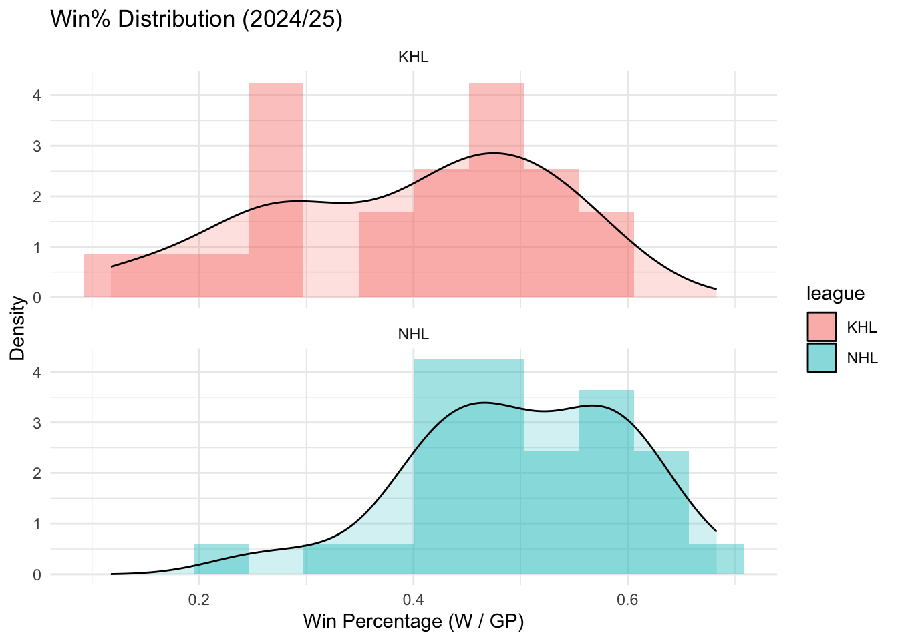
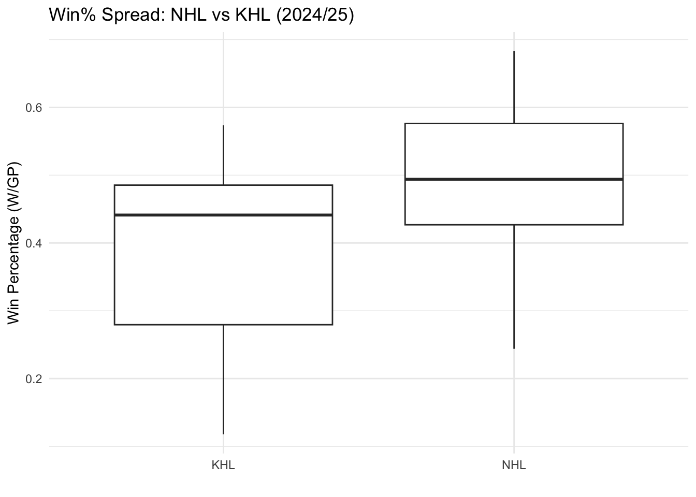

library(tidyverse)
library(lubridate)answerkey
NHL vs KHL Parity: Bradley–Terry Intuition + Randomization
In sports analytics, a common question is parity: how evenly matched are teams in a league.
This worksheet explores: Are teams more evenly matched in the NHL or the KHL (2024–25)?
You will work with two datasets:
“nhl_20245.csv”: NHL team summary stats for 2024–25
“khl_20245.csv”: KHL team summary stats for 2024–25
You’ll practice realistic data analyst tasks:
- creating comparable variables across datasets
- visualizing distributions to compare leagues
- computing spread (parity) metrics like IQR and P90–P10
- using a randomization (permutation) test to evaluate differences
start off by describing randomization process, describe the issue with shuffling, introduce and describe BT method along with a solution, finish randomization test
make them use other parity metrics like P90-P10 in the final part when they will perform an exercise
0. Load the Following Packages
1. Load in the CSV Files
nhl_20245 <- read_csv("nhl_20245.csv")Rows: 32 Columns: 24
── Column specification ────────────────────────────────────────────────────────
Delimiter: ","
chr (2): Team, T
dbl (22): Season, GamesPlayed, Wins, Loses, OT, Points, P%, RW, ROW, S/O Win...
ℹ Use `spec()` to retrieve the full column specification for this data.
ℹ Specify the column types or set `show_col_types = FALSE` to quiet this message.khl_20245 <- read_csv("khl_20245.csv")Rows: 23 Columns: 23
── Column specification ────────────────────────────────────────────────────────
Delimiter: ","
chr (2): Team, TIE
dbl (18): №, GamesPlayed, Wins, OTW, SOW, SOL, OTL, Loses, Points, SOA, SO,...
time (3): TIE/G, TIEN, TIEN/G
ℹ Use `spec()` to retrieve the full column specification for this data.
ℹ Specify the column types or set `show_col_types = FALSE` to quiet this message.2. Create Comparable Variables
nhl_20245 <- nhl_20245 |>
transmute(
league = "NHL",
team = Team,
WinPerc = Wins / GamesPlayed,
GF_pg = GF / GamesPlayed,
GA_pg = GA / GamesPlayed
)
khl_20245 <- khl_20245 |>
transmute(
league = "KHL",
team = Team,
WinPerc = Wins / GamesPlayed,
GF_pg = GF / GamesPlayed,
GA_pg = GA / GamesPlayed
)
df <- bind_rows(nhl_20245, khl_20245)3. Randomization: What Are We Trying to Prove?
When we compare leagues, we will see some difference no matter what. The real question is:
Is the difference we see big enough that it isn’t random?
That’s what a randomization test helps us decide.
We will:
- Measure parity in the real data.
- Calculate the real difference: KHL − NHL
- Shuffle the league labels (NHL/KHL) many times.
- After each shuffle, recompute the difference.
- See how often shuffled differences are as large as the real one.
If the real difference is rare under shuffling -> evidence that the leagues are truly different.
4. Visualize Win% Distributions (First Look at Parity)
Parity means win percentages are more “bunched together”.
- Histogram + density plot
ggplot(df, aes(x = WinPerc, fill = league)) +
geom_histogram(aes(y = after_stat(density)), bins = 12, alpha = 0.4, position = "identity") +
geom_density(alpha = 0.2) +
facet_wrap(~league, ncol = 1) +
labs(
title = "Win% Distribution (2024/25)",
x = "Win Percentage (W / GP)",
y = "Density"
) +
theme_minimal()
- Boxplot
ggplot(df, aes(x = league, y = WinPerc)) +
geom_boxplot() +
labs(
title = "Win% Spread: NHL vs KHL (2024/25)",
x = "",
y = "Win Percentage (W/GP)"
) +
theme_minimal()
5. Choose a Parity Metric: Start with IQR
A parity metric is just a number that describes “spread”.
We’ll start with:
IQR (interquartile range) = Q75 − Q25 - spread of the middle 50% of teams - smaller IQR = more parity
- Observed IQR difference \[obs = IQR(KHL) - IQR(NHL)\]
obs_iqr <- with(df, IQR(WinPerc[league=="KHL"]) - IQR(WinPerc[league=="NHL"]))
obs_iqr[1] 0.05649211- Run the randomization test (shuffle labels)
set.seed(1)
B <- 10000
diffs_iqr <- numeric(B)
for(i in 1:B){
shuffled <- df |>
mutate(league_shuf = sample(league))
diffs_iqr[i] <- with(shuffled,
IQR(WinPerc[league_shuf=="KHL"]) - IQR(WinPerc[league_shuf=="NHL"])
)
}
p_val_iqr <- mean(diffs_iqr >= obs_iqr)
p_val_iqr[1] 0.1724How to interpret the p-value:
small p-value (< 0.05) -> real difference is unusual under shuffling bigger p-value -> difference could easily happen by chance
6. What Could Be “Wrong” With Shuffling?
Shuffling assumes something called exchangeability:
If there is no real league difference, then it should not matter which teams are labeled NHL vs KHL.
But in real sports, leagues can differ in ways that make this imperfect, such as:
- different number of teams
- different schedule format
- different overall level of competition
So shuffling is a useful “null model,” but it’s still an assumption.
That’s why we’re going to introduce a second idea: Bradley–Terry strength.
7. Bradley–Terry Idea: Converting Strength into Win Probability
Bradley–Terry is a model for pairwise matchups: \[P(i\,beats\,j) = \frac{s_{i}}{s_{i} + s_{l}}\] - If two teams have equal strength -> probability = 0.5 - If one team is stronger -> probability > 0.5
So parity can be described as:
- strengths close together -> probabilities near 0.5 -> high parity
- strengths spread out -> probabilities extreme -> low parity
Toy example
strength <- c(A = 0.70, B = 0.55, C = 0.40)
c(
P_A_beats_B = strength["A"] / (strength["A"] + strength["B"]),
P_A_beats_C = strength["A"] / (strength["A"] + strength["C"]),
P_B_beats_C = strength["B"] / (strength["B"] + strength["C"])
)P_A_beats_B.A P_A_beats_C.A P_B_beats_C.B
0.5600000 0.6363636 0.5789474 8. A BT-Inspired Strength Score (Using WinPerc)
We do not have head-to-head game results here, so we will not fit a full Bradley–Terry model.
Instead, we build a BT-inspired score using WinPerc: \[BT_i = \frac{1}{n-1}\sum_{j \ne i}\frac{w_i}{w_i + w_j}\] This gives each team an “average pairwise win probability” against all other teams.
- Write a function
BT_scores <- function(w) {
n <- length(w)
bt <- numeric(n)
for(i in 1:n){
bt[i] <- mean(w[i] / (w[i] + w[-i]))
}
bt
}- Compute BT scores and measure their spread
df_bt <- df |>
group_by(league) |>
mutate(BT = BT_scores(WinPerc)) |>
ungroup()
df_bt |>
group_by(league) |>
summarise(
BT_IQR = IQR(BT),
BT_P90_P10 = quantile(BT, 0.90) - quantile(BT, 0.10),
.groups = "drop"
)# A tibble: 2 × 3
league BT_IQR BT_P90_P10
<chr> <dbl> <dbl>
1 KHL 0.138 0.204
2 NHL 0.0764 0.1069. Randomization Test Again (Now Using BT_IQR)
Now we repeat the randomization logic — but this time our parity metric is BT_IQR.
- Observed difference
obs_bt_iqr <- with(df_bt, IQR(BT[league=="KHL"]) - IQR(BT[league=="NHL"]))
obs_bt_iqr[1] 0.06171239- Shuffle labels and recompute
set.seed(1)
B <- 5000
diffs_bt <- numeric(B)
for(i in 1:B){
shuffled <- df_bt |>
mutate(league_shuf = sample(league))
diffs_bt[i] <- with(shuffled,
IQR(BT[league_shuf=="KHL"]) - IQR(BT[league_shuf=="NHL"])
)
}
p_val_bt <- mean(diffs_bt >= obs_bt_iqr)
p_val_bt[1] 0.002410. Final Exercise: Use Multiple Parity Metrics
Now you will measure parity using multiple metrics (not just IQR).
Compute:
- IQR
- MAD (median absolute deviation)
- P90 − P10
parity_metrics <- df |>
group_by(league) |>
summarise(
IQR = IQR(WinPerc),
MAD = median(abs(WinPerc - median(WinPerc))),
P90_P10 = quantile(WinPerc, 0.90) - quantile(WinPerc, 0.10),
.groups = "drop"
)
parity_metrics# A tibble: 2 × 4
league IQR MAD P90_P10
<chr> <dbl> <dbl> <dbl>
1 KHL 0.206 0.0882 0.303
2 NHL 0.149 0.0793 0.207Your Turn and Reflection Questions
For each metric (IQR, MAD, P90–P10), which league looks like it has more parity?
Pick one metric that is NOT IQR (choose MAD or P90–P10) and run a permutation test:
- compute the observed difference (KHL − NHL)
- shuffle labels many times
- compute the p-value
- Write 2–3 sentences interpreting your result.
- Why do we shuffle the league labels instead of shuffling WinPerc values?
- What does the permutation test help you conclude?
- Why might IQR and P90–P10 tell slightly different stories?
- What is the key idea behind the Bradley–Terry probability formula?
- If you had game-by-game head-to-head results, what could you do that we cannot do here?